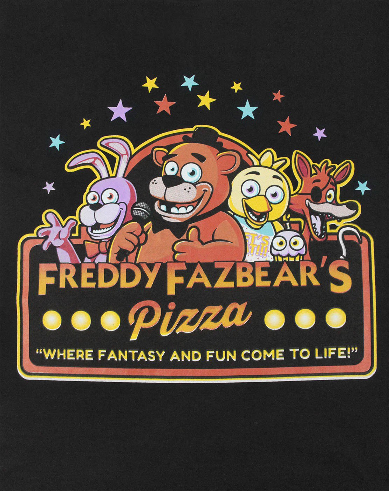

Welcome to Freddy Fazbear's Pizza place!
A magical place for kids and grown-ups alike, where fantasy and fun come to life.
FREDDY FAZBEARS RULES FOR SAFETY Dont run.Dont yell. Dont scream.Dont poop on the floor Stay close to mom.Dont touch Freddy.Dont hit.Leave before dark.FREDDY FAZBEARS RULES FOR STAFFDO NOT leave your post AT ANY TIME.DO NOT attempt to close doors or activate lights unless ABSOLUTELY NECESSARY.DO NOT run out of power. You are allowed a small stipend of power each night which you are expected NOT to exceed.DO NOT attempt to interact with FREDDY FAZBEAR and friends after hours. It is ESSENTIAL that the animatronics are not allowed to SEE HEAR or DETECT a person during free-roam mode! DO NOT tamper with any of the animatronics. DO NOT leave Pirates Kids Cove unattended for long periods of time. DO NOT let FREDDY FAZBEAR disappear from your sight EVER! Be kind to your fellow employees/animatronics. Treat everyone with respect.
Try to keep everything kiddie-friendly! This is a family-friendly pizzeria after all!
Anything not kiddie-friendly must be tagged accordingly.
Failure to comply with Freddys Rules will result in warning or IMMEDIATE TERMINATION!